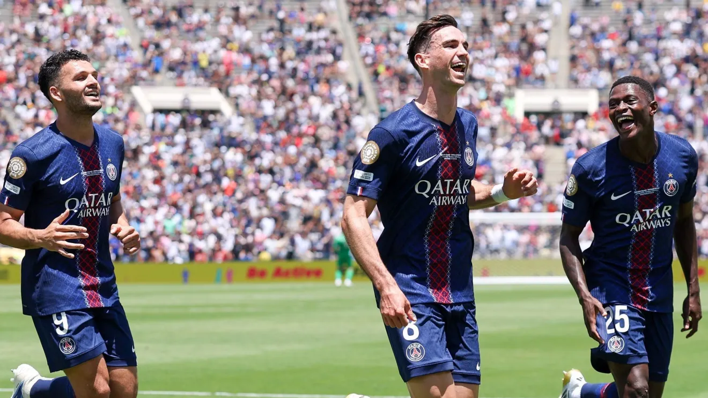
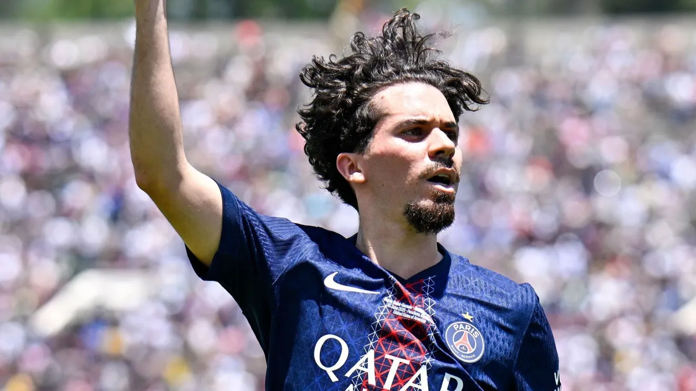

Freguês? PSG tem recorde negativo contra clubes brasileiros

Adversário do Botafogo no Mundial de Clubes, o Paris Saint-Germain já enfrentou times brasileiros 19 vezes
Nesta quinta-feira (19), Botafogo e Paris Saint-Germain duelam pela segunda rodada do Mundial de Clubes. E se o torcedor botafoguense busca um motivo a mais para sonhar com a vitória, o histórico do rival pode ajudar.
Ao todo, o gigante francês já enfrentou clubes do Brasil em 19 oportunidades, e o recorde não é favorável. Inclusive, o Botafogo já encarou o PSG e saiu vitorioso do embate.
Histórico do PSG é negativo contra brasileiros
Nestes 19 jogos, o PSG foi derrotado seis vezes, empatou oito e venceu apenas cinco, ficando com saldo negativo diante dos brasileiros. O levantamento foi feito pelo blog Jornalheiros.
A primeira partida registrada aconteceu em 1975, e a última foi disputada em 2000. A maioria dos confrontos aconteceram pelo Torneio de Paris, que era organizado pelo clube entre as décadas de 1970 e 1980.
As vitórias brasileiras diante do hoje bilionário PSG foram protagonizadas por Flamengo (1975), Fluminense (1976 e 1987), Seleção Brasileira Olímpica (1976), Atlético-MG (1982) e pelo próprio Botafogo (1984).
Já os triunfos do clube parisiense aconteceram diante de Vasco (1977 e 1979), Seleção Brasileira Olímpica (1979), Flamengo (1979) e Fluminense (1993).
Botafogo já bateu o PSG
Em 1984, Botafogo e PSG participaram do torneio amistoso de Genebra e acabaram se enfrentando na competição.
Na Suíça, o time parisiense saiu na frente com Susic. O Glorioso se recuperou na partida e virou o placar com dois gols de Baltazar e outro de Helinho, vencendo por 3 a 1.
O clube carioca acabaria sendo campeão do Torneio de Genebra, derrotando o Everton-ING na final.
Botafogo x PSG no Mundial de Clubes